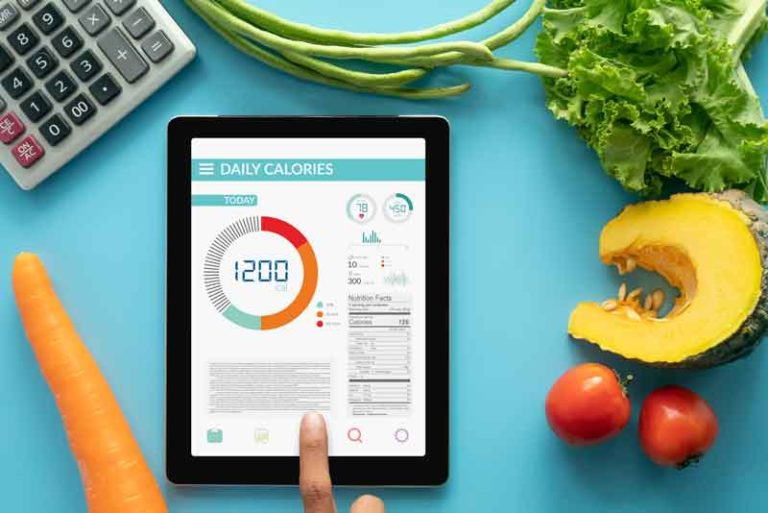

ESCOGE EL
MEJOR CAMINO
SALUDABLE
¡Descubre una Vida Saludable
a Través de Nuestra Guía Nutricional!
¿Quieres tomar el control de tu salud y bienestar?
¡Embárcate en un viaje hacia una alimentación consciente y nutritiva!
¡Tu salud y bienestar están a solo un folleto de distancia!

¡Controla tus Carbohidratos
con Nuestro Contador Especializado!
¿Necesitas mantener un seguimiento riguroso de tus carbohidratos?
¡Empieza a tomar el control de tus carbohidratos
y toma decisiones informadas para tu bienestar!
¡Tu salud está a solo un contador de carbohidratos de distancia!